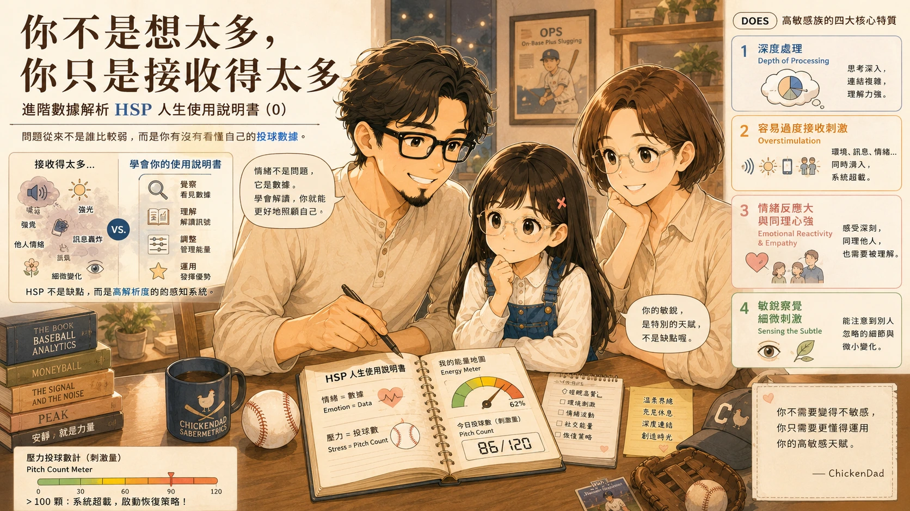

保健室
從醫學筆記、中西醫觀察、保健食品到家人的健康經驗，把日子照顧得更安穩。
悉心守護身心，也研究一家人的健康智慧

鼠姊姊半夜兩點的喘鳴聲：那一晚，我們又再次認識「急性氣喘」
星期六凌晨兩點多，鼠姊姊的喘鳴聲讓雞爸爸和鼠媽媽重新認識急性氣喘、急救藥與觀察警訊。
說唱巔峰對決2026：炸場首推龍弟弟
真正炸場的不在螢幕裡，而是在餐椅上；一歲半的龍弟弟，用點頭、蹲跳和摸下巴，把音樂跳進了生活。
雞爸爸、兔阿嬤、鼠媽媽的肌酸初體驗
一次健身補給品開箱，變成三個族群的肌酸初體驗。
異位性皮膚家庭的理解與陪伴
我沒有辦法替你癢，但我們可以陪你一起加油。
鼠姊姊五歲了還沒分房睡，是我們做錯了嗎？
五歲了，應該要自己睡了吧？但事情往往不是想得那麼簡單。
如何降低家庭專屬的「數據雜訊」
適當叫個暫停，確認場邊暗號有沒有看錯。
關注「能量用球數」：HSP 的守護神基因
把高敏感族群的大腦想像成 MLB 投手，看懂狀況為何常發生在體力不足時。

你不是想太多，你只是接收得太多
進階數據解析 HSP 人生使用說明書（0）。